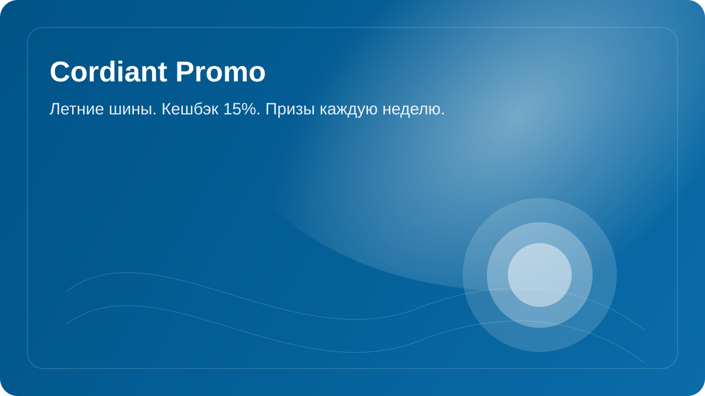

Шины Cordiant
ВСТРЕЧАЙТЕ НА ПОДИУМЕ
Tour, Comfort 2, Sport 3, Off Road, Off Road 2, Gravity, Gravity SUV, All Terrain, Road Runner
ПодробнееРеклама, АО "Кордиант", ИНН 7601001509
Идеально для лета
Модели отличает широкая адаптация под климатические и дорожные условия России.


Технологии
Приспособленность к российским
условиям эксплуатации
Шины Cordiant проектируются с учетом российских реалий. Не всегда хорошее состояние дорог большие расстояния резкие перепады температур а также разнообразие климатических зон — все это учитывается при разработке новинок бренда.
В составе резиновой смеси используются силикон-содержащие полимеры для улучшения характеристик сцепления на мокрой и заснеженной дороге. Для повышения износостойкости и увеличения срока службы шин включаются карбонатные добавки.
Рисунок протектора оптимизируется для различных погодных условий и типов дорожного покрытия. Использование асимметричного и направленного дизайна протектора помогает улучшить управляемость, стабильность на скорости и эффективность отвода воды.
Применение стальных кордов и специализированных текстильных материалов укрепляет боковины и снижает риск порезов и разрывов. Инновационная система укладки слоев повышает общую прочность и долговечность шин в российских условиях эксплуатации.

Из чего сделаны шины Cordiant
Для изготовления шин Cordiant используются самые передовые материалы и компоненты. Резиновая смесь летних шин создается на основе силикон-содержащих полимеров, которые улучшают сцепление с мокрой дорогой.
Пять причин купить
шины Cordiant
Квиз по шинам Cordiant
Ответьте на вопросы и проверьте, насколько хорошо вы знаете ключевые технологии и модели линейки.
0%
Вопрос 1 из 8
Какая модель летних шин Cordiant обеспечивает экономию топлива до 30% по сравнению с предшественником?
Да, верно!
Краткая справка по вопросу будет показана здесь.
Результат квиза
Ваш результат: 0%
Ответьте на вопросы, чтобы получить персональный результат.
Кодовое слово: SUMMER